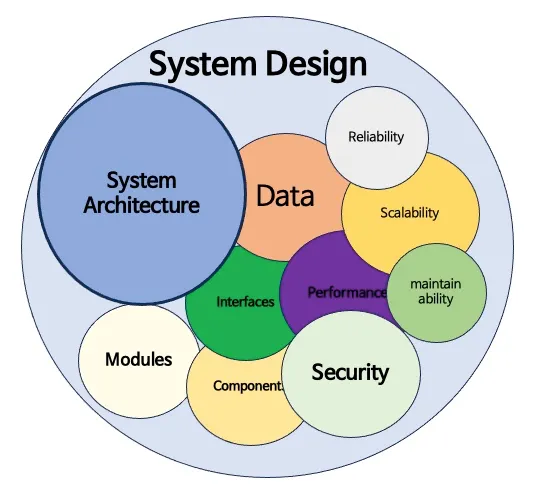

Diseño de Sistemas
estado: en progreso (ver pendientes)El diseño de sistemas es el proceso de definir la arquitectura, componentes e interacciones de un sistema.

Leer más
El propósito de este blog es compartir poco a poco lo que voy
aprendiendo tras graduarme de la universidad, ofreciendo un
recurso práctico para estudiantes y cualquier persona que desee
aprender sobre
desarrollo y arquitectura de software.
¡Bienvenido a mi espacio de notas y aprendizaje continuo!
El diseño de sistemas es el proceso de definir la arquitectura, componentes e interacciones de un sistema.

DevOps es la combinación de personas, procesos y herramientas que trabajan en conjunto desde una idea hasta la ejecución y despliegue de software de alta calidad de manera consistente.
Leer másConsiste en otorgar a los modelos de IA la capacidad de aumentar su conocimiento consultando fuentes externas de información en tiempo real.
Leer más